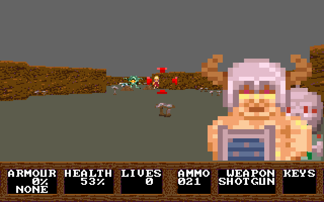
| Title | TROG 3D: kdrnic's labyrinth |
| Category | Games |
| Language | C |
| Platform | Win32 MSDOS |
| State | Completed |
| Download | Win32 & DOS |
| Started | January 2021 |
| Finished | 2026 |
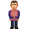
The game "TROG 3D : kdrnic's labyrinth" is a game for MS-DOS and MS-Windows 95 and above.One for each level. Note they are slightly squished since the game uses a 320x200 resolution in the DOS version.
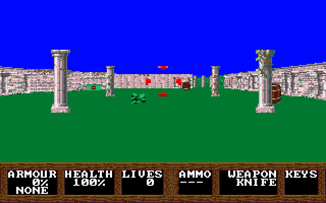 |
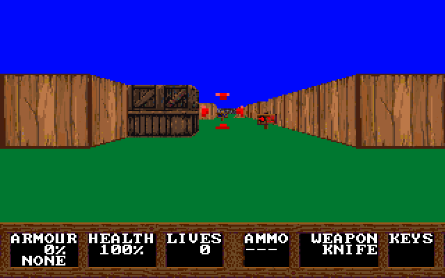 |
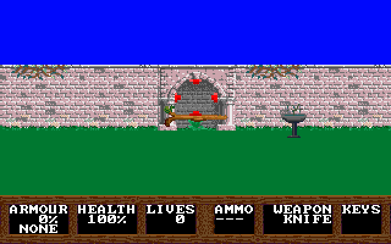 |
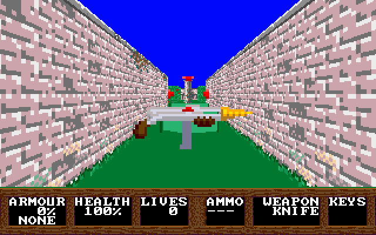 |
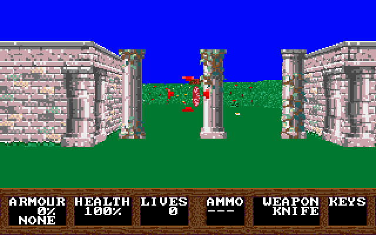 |
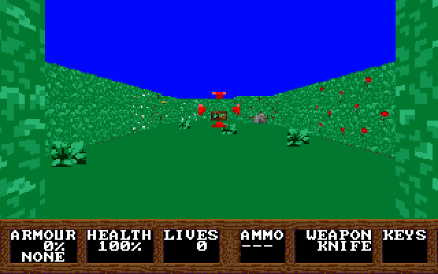 |
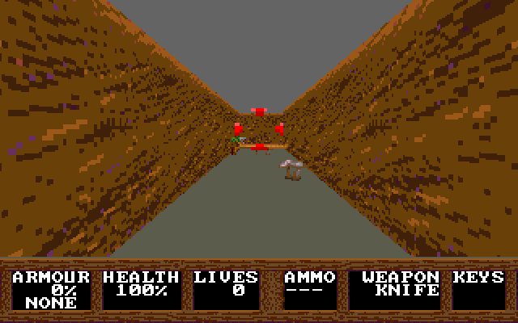 |
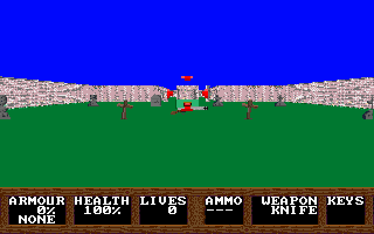 |
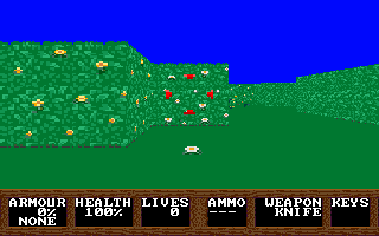 |
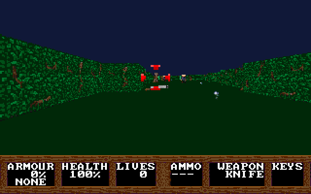 |
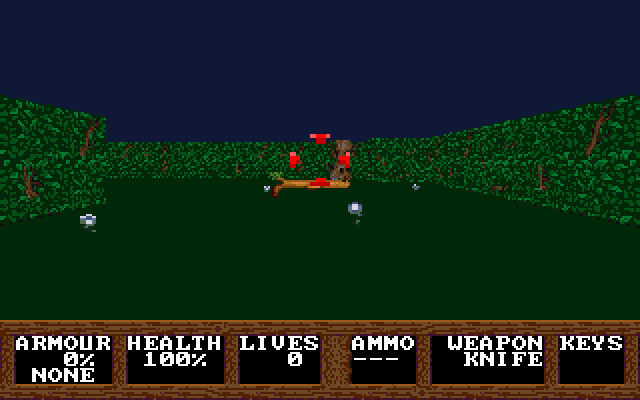 |
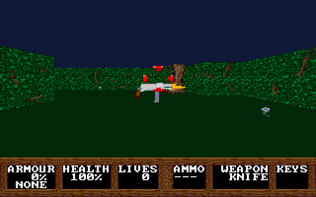 |
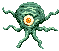
Gameplay footage (longplay)This is just an OBS recording of this pack of demos.
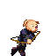
SYSTEM REQUIREMENTSCPU: 486 or above. Although a Pentium 60 is much more comfortable.
RAM: 8+MB
Sound card: Sound Blaster 16 or compatible.
| Left Ctrl | Fire weapon |
| KEY_LSHIFT | Hold to run |
| Number row E | Select next Weapon |
| Number row Q | Select previous Weapon |
| Number row 1 | Weapon1 - Knife or Fist |
| Number row 2 | Weapon2 - Pistol |
| Number row 3 | Weapon3 - Shotgun |
| Number row 4 | Weapon4 - Machine gun |
| Number row 5 | Weapon5 - Orb gun |
| Number row 6 | Weapon6 - Rocket launcher |
| A | Strafe left |
| D | Strafe right |
| Left | Turn left |
| Right | Turn right |
| W | Move forward |
| S | Retreat |
| Alt | Hold to strafe |
| M | Map |
| R | Reload weapon (rarely required) |
| Function key F5 | Start recording a GIF video |
| Function key F6 | Stop recording a GIF video |
| Function key F4 | Save state (hacky, unsafe) |
| Function key F8 | Load save (hacky, unsafe) |
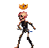
CHEAT CODESJust type any of those at any point during gameplay.
| KDRBEHOLDA | Uncovers the whole map (press M key) |
| KDRFA | All weapons, full ammo and full armor |
| KDRKFA | All weapons, full ammo, full armor, and all keys |
| KDRSPISPOPD | Walk through walls (noclip) |
| KDRDQD | Turns on god mode |
| KDRPOX | Kill all enemies |
| KDRMPOX | Kill all enemies except skeletons |
| KDRXRAY | X-ray vision (3 modes, enter code repeatedly) |
| KDRTELEK1 | Teleport to key 1 |
| KDRTELEK2 | Teleport to key 2 |
| KDRTELEK3 | Teleport to key 3 |
| KDRTELEL1 | Teleport to lock 1 |
| KDRTELEL2 | Teleport to lock 2 |
| KDRTELEL3 | Teleport to lock 3 |
| KDRTELEXT | Teleport to level exit |
| KDRWOLF | Turns all enemies into Wolfeinstein 3D guards |
| KDRBUNY | Turns all enemies into bunnies |
| KDRBEHOLDC | Give player a CLOCK (temporarily stops time) |
| KDRLVLRST | Reset level records for current level |
| KDRDMG | Game Boy (Dot Matrix Game) mode |
| KDRCRANKUP | Fast firing rate for current weapon |
The game automatically records "demonstration" (demo) files to directory ./demos/
Those are like a video but store only player inputs, thus low file size. They are easily shared. Obviously inspired by Doom LMP files.
Those have the following file name format:
MMDDHHmm.REC Month, Day, Hour, minute
They are also copied to the following other file names:
xxxxx.1ST First successful completion of level xxxxx xxxxx.BKI Best kills for level xxxxx xxxxx.BTI Best time for level xxxxx xxxxx.BHO Most skeleton golf holes for level xxxxx
This is a pack of demo files of my complete playthrough:
PROGRAMMING by
kdrnic
ORIGINAL 2D ART by
kdrnic
VanderSalva
Sound effect edits by
kdrnic
Game inspired by/made for
9th kajam game jam
(https://alakajam.com/9th-kajam)
by toasty
Allegro 4 game library
by Shawn Hargreaves et al
Initial\old raycaster code
by Lode Vandevenne
The Best IRC Channel
#dosgameclub @ irc.afternet.org
with special thanks to
rnlf voxel patrick_wd
Open Game Art (opengameart.org) SFX
--------------------------------------------
RPG Sound Pack
by artisticdude
Chaingun, pistol, rifle, shotgun shots
by qubodup
25 CC0 bang / firework SFX
by rubberduck
Cork
by Lamoot
Bubble Pop
by pokmon63
Evil Laugh
by AntumDeluge
50 CC0 Sci-Fi SFX
by rubberduck
Action Shooter Soundset (WWVi)
by qubodup
Fantasy Weapons and Apparel SFX Library
by Vehicle
Synthesized Fire Sound Effect
by Spring Spring
Female RPG Voice Starter Pack
by cicifyre
202 More Sound Effects
by OwlishMedia
5 break, crunch impacts
by qubodup
80 CC0 creature SFX
by rubberduck
512 Sound Effects (8-bit style)
by SubspaceAudio
Archers shooting
by copyc4t
Squeaky Rat
by qubodup
Aargh! (male screams)
by congusbongus
3 dark magic spells
by qubodup
Water Splash and sand footsteps
by Peludo
Ticking clock.
by bart
Bowling Ball Rolling
by qubodup
Scrapes
by AntumDeluge
Punch, slap, n' kick
by congusbongus
Stop
by Lamoot
various scissors
by sinny
Helicopter Sounds
by aquinn
Open Game Art (opengameart.org) 2D art
--------------------------------------------
Sign Pack
by Nikke
Stunning Pixel Art RPG Tileset
by uheartbeast
Misc. Dark Fantasy Scenery Sprites
by ETTiNGRiNDER
Classical Ruin Tiles
by surt
Basic map 32x32 by Ivan voirol
by Ivan Voirol
32x32 (and 16x16) RPG Tiles--Forest and some
Interior Tiles
by Redshrike
Firearm weapons
by fmunoz.geo
Some Modified Assets from Fantasy Icon
Pack by Ravenmore
by mold
Fantasy Icon Pack by Ravenmore
by Ravenmore
CC0 Hand Wear Icons
by AntumDeluge
UndeadEmpire tileset (64x64) repack (floor,
lava, walls and effects)
by lukems-br
Grunge Tileset
by mfburn
Various inventory 24 pixel icon set
by qubodup
[LPC] Birds
by bluecarrot16
Haunted Forest Trees
by ETTiNGRiNDER
Old Wooden Props 32x32
by ImogiaGames
Game wood panel
by PINKCANNON
Splash Effect [32x32]
by Jesse McCarthy
Bunny Rabbit LPC style for PixelFarm
by Redshrike
[LPC] Blacksmith
by bluecarrot16
Flying Broom (Witchcraft)
by Xacur
Shovel
by AntumDeluge
High res fire ball
by Game Developer Studio
Crocodile trap
by knik1985
Primitive Village
by Vomdrache
Open Game Art (opengameart.org) 3D art
--------------------------------------------
FLARE Mod - Hobgoblin Archer
by VWolfdog
The art used is CC-00, CC-BY, OGA-BY, or similar licenses (without Share-Alike).
https://opengameart.org/content/rpg-sound-pack